一栋 8 卧 3 卫的旧养老院，被改成 5 卧 4 卫、双主卧的单户住宅，成交 267.5 万美元。博主把拆除、地基、水电、面层、厨房、四间卫浴、外部工程的单价一条条报了出来，总共 40 万美元。你要做同类项目，可以拿这张清单逐项对报价。
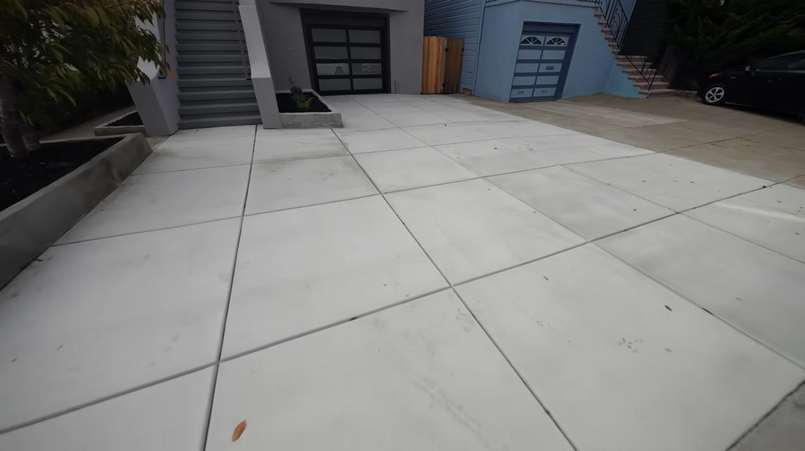
适合谁：准备买老房整体改造、想拿真实分项报价对施工队预算的人。视频给的是旧金山湾区高端盘的口径00:00:50，其他城市单价会差很远，但「哪几项最容易失控」的判断可以通用。
不适合谁：只做局部翻新（换地板、刷墙）的人——这篇里一半的钱花在拆除、地基、水电这些看不见的地方。
视频里没说：工期总长、设计师与报建费用、软装与家具。作者只报了施工分项和总价。
这栋房子的原始状态是 8 卧 3 卫的养老院，格局很怪00:00:09。作者的改法是缩到 5 卧 4 卫、做两个主卧套间00:00:18。格局一变，后面的拆墙、移楼梯、改水电才跟着定。
所以第一步不是找施工队，是把「几卧几卫、哪个是主卧、楼梯放哪」画死。视频里楼梯从左移到中庭，是因为原位置太偏00:02:46。
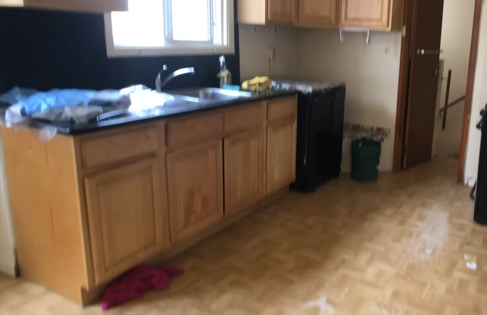
作者做这行 4 年半、经手 30 多个翻新项目00:00:55。她的口径是：先想清楚「这房子卖给谁」，再决定钱往哪砸——这也是她把两个主卧做出来的原因00:00:26。
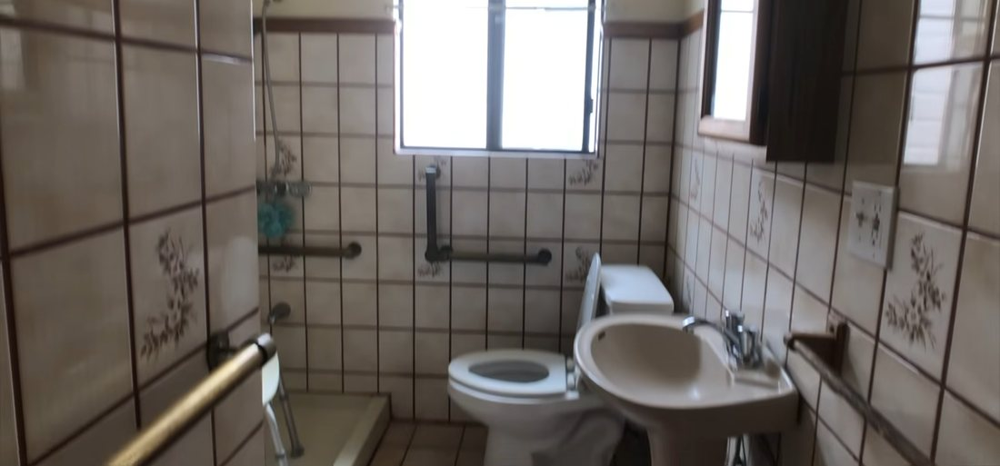
| 要决定的事 | 视频里的数字 | 怎么理解 |
|---|---|---|
| 要不要动地基 | 3 万美元00:01:49，因为要把楼下合法化成居住空间、加剪力墙 | 作者原话：一碰地基就贵00:01:56。这项能不动就不动 |
| 楼梯挪不挪 | 新建楼梯 5,000 美元，不含玻璃栏杆和扶手00:02:51 | 挪楼梯会连带删掉一间小卧室、重做楼板，是格局级决定 |
| 墙面做到什么级别 | Level 5 腻子 25,000 美元00:03:51 | 高端盘的通行做法：墙面极平，灯光打上去不出波浪 |
| 地板选什么 | 欧洲橡木 6 美元/平方英尺，含安装共 30,000 美元00:04:4300:05:00 | 作者说这个价位「很划算」；安装单价视频里没报清 |
| 栏杆用玻璃还是金属 | 定制玻璃栏杆 22,000 美元，交期两个月00:09:20 | 出效果但最拖工期，需提前下单 |
| 卫浴做几间 | 客卫 12,000×2、主卫 22,000 与 18,00000:07:3100:08:0900:08:55 | 四间合计 6.4 万美元，占总价约 16%（本文按视频数字相加） |
拆除 12,000 美元00:01:41。贵的原因是量大：客厅的旧砖壁炉、带两侧墙的旧楼梯、整间厨房全部拆空00:01:26。
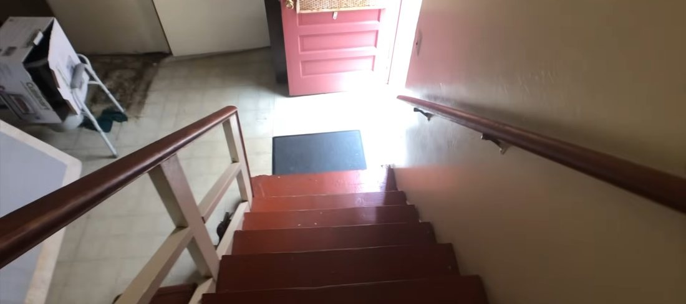
地基与剪力墙 30,000 美元00:02:00。框架改造 14,000 美元00:02:37，主要是移墙、扩卧室、加衣柜。新楼梯 5,000 美元，不含玻璃栏杆与扶手00:02:56。
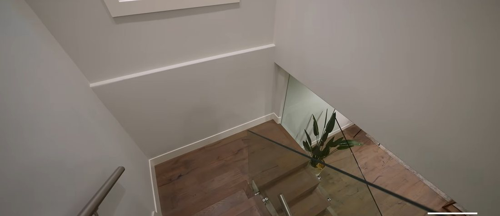
粗电 12,000 美元，连卧室都加了筒灯00:03:02。粗水 16,000 美元，因为四间卫浴的洁具位置全挪了00:03:23。整屋换铜管另外 9,000 美元00:03:29。
保温加石膏板 8,000 美元，按 2,500 平方英尺算00:03:36。机械部分 10,000 美元，热水器和空调机组移位、暖通搬进阁楼00:09:52。
四项隐蔽工程合计约 4.5 万美元（本文相加）。这部分钱在入住后完全看不见，但一旦省掉，后面砸墙重做的代价更高。作者的顺序是：先定洁具位置，再排管，再封板。
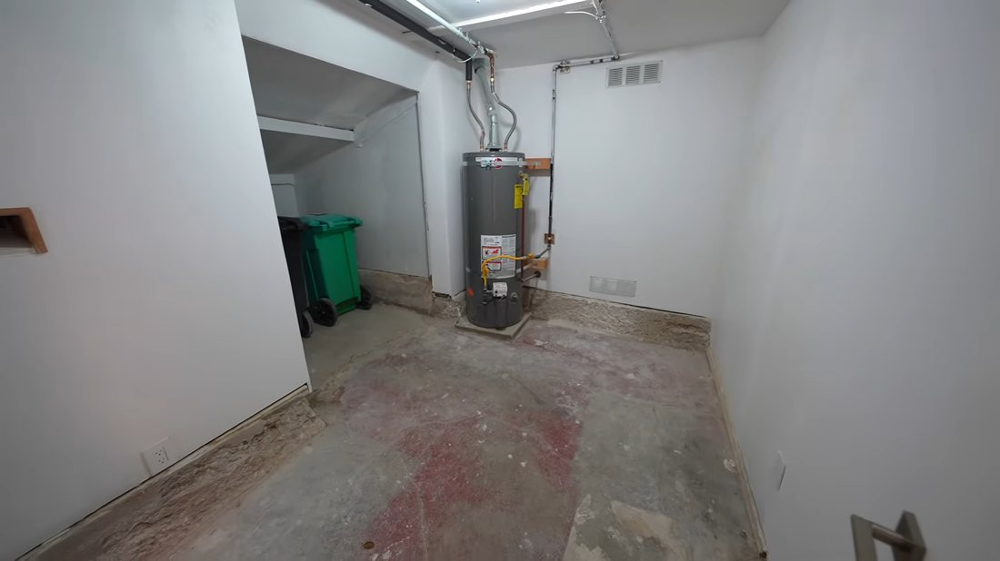
Level 5 石膏板 25,000 美元，作者说「非常平，但很费工」00:03:51。这套门是单面板的定制感门，含后院玻璃门、家庭室推拉门和全部衣柜门，配上 4 英寸门套、6 英寸踢脚线，一共 14,000 美元00:04:0700:04:16。
铺地板前先找平，下层不平得厉害，找平 10,000 美元00:04:36。地板本身 6 美元/平方英尺，连工带料 30,000 美元00:04:4300:05:00。全屋双层中空窗、含两扇凸窗，共 8,000 美元00:05:08。
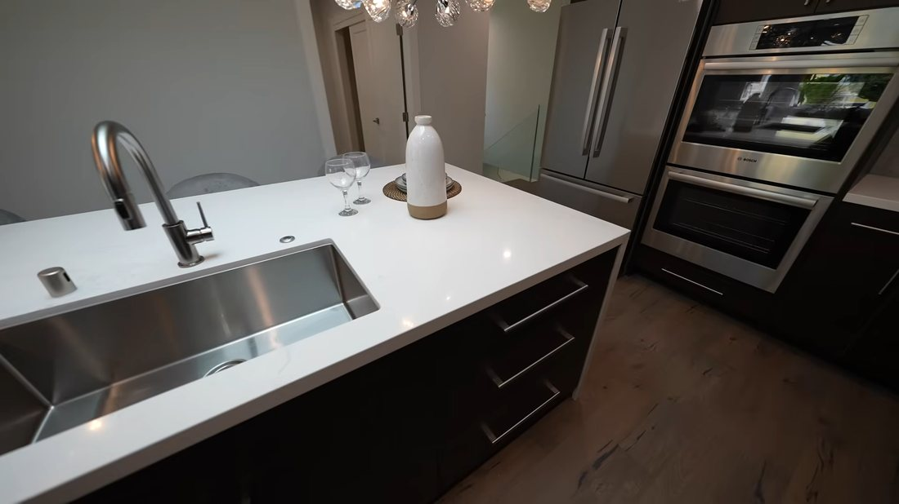
厨房总价 33,000 美元00:06:14。贵在两处：柜门是平板欧式，比作者常用的 shaker 贵00:05:40；岛台做了「瀑布边」——台面从台面一直包到地面，多花几千美元00:05:59。
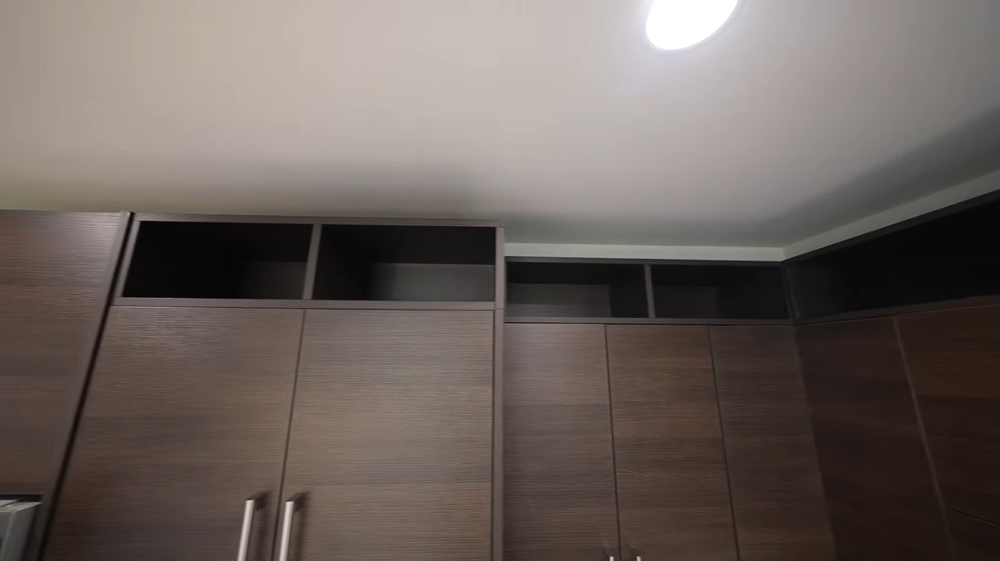
柜顶那排开放格是木工用柜板做的，作者说这是让柜子「看起来像定制」的关键00:06:05。
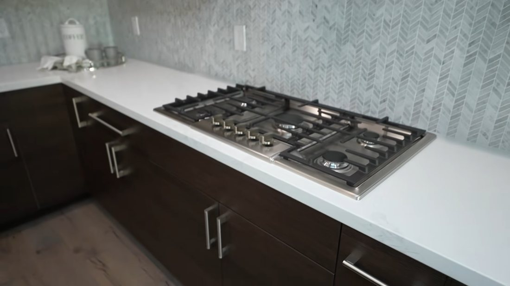
家电用 Bosch，合计 10,000 美元。比作者平时用的贵，因为油烟机、灶台、烤箱是分开买的，不是一体的滑轨炉00:06:55。
为了装油烟机和多做柜子，这面墙拆掉了两扇窗，补光靠新开的天窗，3,500 美元00:07:0700:07:17。
| 卫浴 | 造价 | 贵在哪 |
|---|---|---|
| 客卫 ×2 | 各 12,000 美元00:07:31 | 比作者平常做贵，因为台盆柜与台面分开采购，浴缸也选了更高的款式00:07:43 |
| 主卫 1 | 22,000 美元00:08:09 | 整墙铺仿大理石瓷砖，双台盆，双淋浴头；接近平常造价的两倍00:08:17 |
| 主卫 2 | 18,000 美元00:08:55 | 推墙、全部洁具移位，做成浴缸与淋浴分开的湿区00:09:00 |
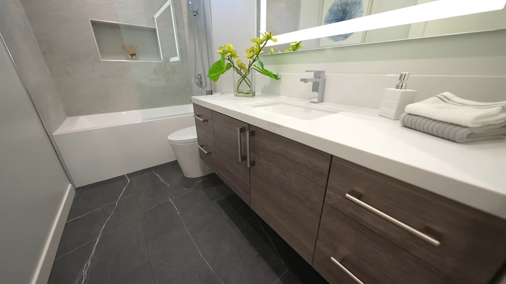
作者的判断很直接：卫浴想显贵，就把钱花在「整墙瓷砖 + 双台盆」上，其余能省00:08:23。
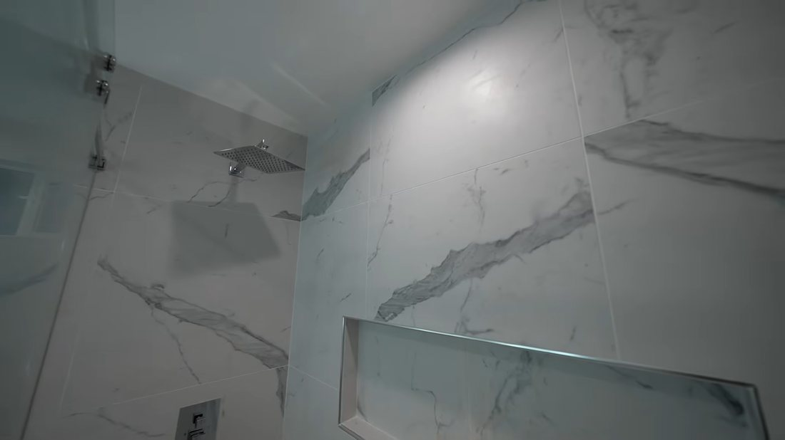
玻璃栏杆 22,000 美元，全定制，交期两个月00:09:2000:09:26。室内油漆 6,000 美元，因为墙面是 Level 5，漆面效果才出得来00:09:31。
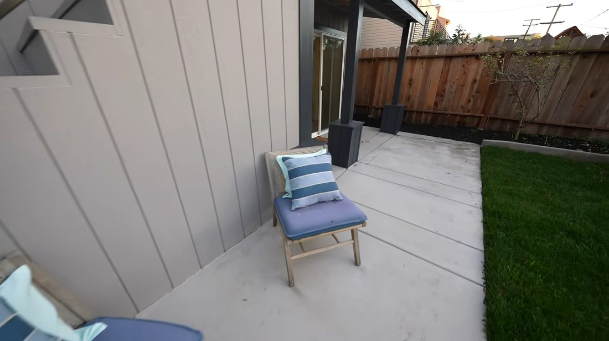
院子这一块分四笔：后院绿化（植物、覆盖物、找平）4,000 美元00:10:08；前后院金属栏杆 5,500 美元00:10:17；楼梯下方包管包表 + 外墙板修补 9,000 美元00:10:28；后院露台加前院车道混凝土 15,000 美元00:10:44。
门面两项：带四盏灯的入户门 1,500 美元00:10:59，配同款车库门 5,500 美元00:11:05；前院两个花池的抗旱植物 800 美元00:11:29。
| 坑 | 视频里的证据 | 怎么避 |
|---|---|---|
| 以为拆旧很便宜 | 光拆除就 12,000，因为壁炉、楼梯、整厨都要拆00:01:41 | 报价时把「拆什么、拆到什么程度」写进合同，别按面积包干 |
| 动地基才发现连锁反应 | 为合法化楼下空间，地基加剪力墙 30,00000:01:49 | 签约前先查楼下是否可合法化，再决定要不要碰地基 |
| 洁具位置改来改去 | 粗水 16,000，全因为四间卫浴的洁具全移位00:03:23 | 水电开工前把每间卫浴的洁具点位定死，之后不再改 |
| 定制件拖工期 | 玻璃栏杆定制，等了两个月才到00:09:26 | 栏杆、门窗这类定制件在拆旧阶段就下单 |
| 地板直接铺在不平的地面上 | 先花 10,000 找平，再铺 30,000 的地板00:04:36 | 地板合同里单独列找平项，别让施工队「顺便找平」 |
把视频里报的 30 个分项相加约 38.3 万美元，作者给的总价是 40 万美元00:11:34。差的 1.7 万视频没解释，可能是没单独列的小项或税费。你按这份清单做预算时，记得在合计上再加 5% 左右的余量。